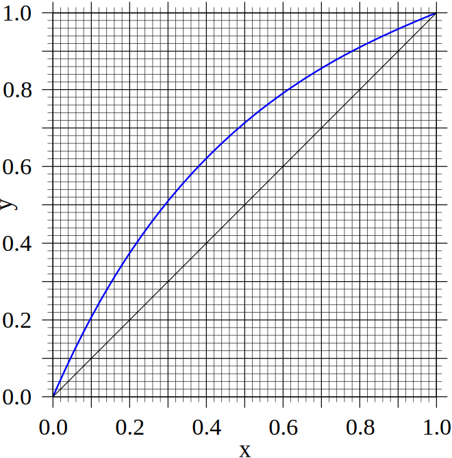

Multi-Stage Distillation: Part 02
- We need to derive some operating line equations for a multi-stage distillation column so that we may design one.
- The operating line equations are just mass balances of the most volatile component.
-
We can split the column into three areas
- The stages/trays above the feed tray, known as the enrichment or rectification section.
- The stages/trays below the feed tray, known as the stripping section.
- The feed tray (or flashing section).
- Each of these areas will have a different operating line, due to the changes in column vapour and liquid flow-rates caused by the feed stream entering the column.
- We will first consider the rectification section (upper section)…


- Let's consider some arbitrary plate, $n$, within the enrichment (upper) section of the column.
- We can perform a mass balance from this plate to the top product to give \begin{align*} y_n V_n &= x_{n+1} L_{n+1} + x_D D \end{align*}
- We can rearrange this so it looks like an operating equation for the top of the column \begin{align*} y_n &= x_{n+1}\frac{L_{n+1}}{V_n} + x_D\frac{D}{V_n} \end{align*}
- Assuming constant molar overflow (discussed in the last lecture) is true, we have $L_{n+1}=L_{n}$.
- We now have our operating equation for the enrichment section of the column. \begin{align*} y_n &= x_{n+1}\frac{L_{n}}{V_n} + x_D\frac{D}{V_n} \end{align*}

- Considering the bottom section of the column, we can perform a mass balance over some tray $m$, and the bottom product $W$. \begin{align*} x_{m+1} L_{m+1} = y_{m} V_m + x_{W} W \end{align*}
- Again, we can use constant molar overflow ( CMO) and some rearranging to give \begin{align*} y_{m} = x_{m+1}\frac{L_m}{V_m} - x_{W}\frac{W}{V_m} \end{align*}
- We have our two operating equations for the enrichment and stripping section of the column.
- But the flow-rates, $L_{n/m}$ and $V_{n/m}$ within the two sections of the column are not immediately available when starting a design.
- Can we express these same equations in a more convenient design variable?
- An important design variable in distillation is the reflux ratio, $R=L_{N+1}/D$.
- This is the amount of liquid returned to the column versus to the distillate collected (top product).
- It is a free parameter we can alter to optimise our design and it controls the absolute flow-rates within the column.
- The reflux ratio must be greater than $R>0$ as some liquid must flow down the column to effect a separation.
- In the limit of $R\to\infty$, all of the vapour is returned to the column (known as total reflux).
- We can write the reflux ratio in terms of the flow-rates within the stripping section if we use the constant molar overflow assumption again. \begin{align*} R&=\frac{L_{n}}{D} \end{align*}
- Taking the operating equation in the enrichment section, we have \begin{align*} y_n &= x_{n+1}\frac{L_{n}}{V_n} + x_D\frac{D}{V_n} \end{align*}
- Using the mass balance at the top of the column \begin{align*} V_N&=L_{N+1}+D\\ V_n&=L_n+D&\text{(Constant Molar Overflow)} \end{align*} and the definition of the reflux ratio $R=L_n/D$.
- We can then simplify the operating equation : \begin{align*} y_n &= x_{n+1}\frac{R}{R+1} + \frac{x_D}{R+1} \end{align*}
- This form is very convenient as we have an operating equation in terms of the design variables (the reflux ratio and the distillate concentration).
- Can we do something similar for the stripping operating equation? \begin{align*} y_{m} = x_{m+1}\frac{L_m}{V_m} - x_{W}\frac{W}{V_m} \end{align*}
- We cannot relate the flow-rates in the stripping section of the column to the reflux ratio, as the feed stage alters the flow-rates in the column.
- To define this operating equation in more convenient terms, we need to look at how the feed tray affects the vapour and liquid flow-rates in the column.

- When the feed enters the column it will flash to its equilibrium state at the operating pressure of the column.
- The liquid fraction of the flashed feed is denoted $q$ and we can control this value by altering the feed temperature.
- The quantity of liquid produced by the feed on the feed tray is therefore $q F$, and the quantity of vapour produced is $(1-q)F$.
- Performing a mass balance around the feed tray, we can generate a relationship between the column flow-rates in the enriching and stripping sections of the column. \begin{align*} L_F &= L_{F+1} + q F \\ V_F &= V_{F-1}+(1-q)F \end{align*}
- Assuming constant molar overflow, we can write \begin{align*} L_m &= L_{n} + q F \\ V_n &= V_m+(1-q)F \end{align*}
- Now that we have a relationship between the flow rates in the two sections of the column, we can try to find the stripping section's operating line.
- Taking the original operating equations, we have \begin{align*} y_{m} V_m &= x_{m+1} L_m - x_{W} W\\ y_n V_n &= x_{n+1} L_{n} + x_D D \end{align*}
- These operating lines must meet at the feed tray ($y=y_m=y_n$, $x=x_{m+1}=x_{n+1}$), as the feed tray is in both sections of the column.
- Subtracting one operating equation from the other to obtain \begin{align*} y(V_m-V_n) &= x (L_m-L_n) - x_{W} W - x_D D \end{align*}
- Using the result from the previous slide \begin{align*} L_m &= L_{n} + q F & V_n &= V_m+(1-q)F \end{align*} we have \begin{align*} y &= x\frac{q}{q-1} - \frac{x_{W} W + x_D D}{F (q-1)} \end{align*}
\begin{align*}
y &= x\frac{q}{q-1} - \frac{x_{W} W + x_D D}{F (q-1)}
\end{align*}
- From a total mole balance we have \begin{align*} x_F F = x_{W} W + x_D D \end{align*}
- Inserting this into the above equation, we obtain \begin{align*} y &= x\frac{q}{q-1} - \frac{x_F}{q-1} \end{align*}
- This is known as the $q$ -line.
- It is similar to a flash distillation operating line for the feed.
- But its real power is that at the point where it intersects with the enrichment operating line, this point is also a point on the stripping operating line.
- So, if we plot the enrichment operating line \begin{align*} y_n &= x_{n+1}\frac{R}{R+1} + \frac{x_D}{R+1} \end{align*}
- And the $q$ -line \begin{align*} y &= x\frac{q}{q-1} - \frac{x_F}{q-1} \end{align*}
- Then the intersection of these two lines is one point on the stripping operating line. \begin{align*} y_{m} = x_{m+1}\frac{L_m}{V_m} - x_{W}\frac{W}{V_m} \end{align*}
- We only need one more point to plot the stripping operating line!
- We'll try to generate this second point without using the flow-rates in the column. The stripping operating line is \begin{align*} y_{m} = x_{m+1}\frac{L_m}{V_m} - x_{W}\frac{W}{V_m} \end{align*}
- Lets try to generate a point at $x_{m+1}=x_W$, we find \begin{align*} y = x_{W}\frac{L_m -W}{V_m} \end{align*}
- But from a mass balance we can see that $L_m -W=V_m$.
- Thus, another point on the stripping operating line is ( $x_W$, $x_W$)!
- We can now can plot all of our operating lines using just the design variables $R$, $x_D$, $x_W$, $q$, and the $q$ -line.
- Lets consider our old faithful mixture of Benzene and Toluene.
- We want to distill a equimolar mixture of these two components to a purity of $x_D=0.9$ and $x_W=0.1$.
- When the feed stream enters the column, it flashes and produces an equal quantity of vapour and liquid, so that $q=0.5$.
- We also decide to use a reflux ratio of $R=3$.
- How many stages above and below the feed are needed to achieve this separation?

- Starting with the enrichment section, the operating line is given by \begin{align*} y_n &= x_{n+1}\frac{R}{R+1} + \frac{x_D}{R+1} \end{align*}
- Setting $x_{n+1}=0$, we have one point at $y_n=x_D/(R+1)=0.9/(3+1)=0.225$
- Setting $x_{n+1}=x_D$, we have $y_n=x_D$.
- These are our two points on the enrichment operating line, we can now plot it on the VLE chart.

- We next draw the $q$ -line, to solve for the first point on the stripping operating line.
- The $q$ -line is given by \begin{align*} y &= x\frac{q}{q-1} - \frac{x_F}{q-1} \end{align*}
- The first point on the $q$ -line is given by $x=x_F$, which gives $y=x_F$!
- The second point is arbitrary, we can try $x=0.4$, to obtain \begin{align*} y &= 0.4\frac{0.5}{0.5-1} - \frac{0.5}{0.5-1}\\ &= 0.6 \end{align*}

- Finally, we draw the stripping operating line.
- We already have one point on the line, we just need to find another.
- We discovered before that the point $y=x=x_W$ lies on the stripping operating line, so we can just add this point and we have both our operating lines drawn!

- We have the two operating lines for the distillation column plotted on our VLE graph.
- These function graphically just as the absorber/stripper operating lines we used previously.
- To determine the number of stages needed to perform the separation, we just need to “step” from either the top-product concentration, or the bottom product concentration.
- We'll start from the top in this case, but this choice is somewhat arbitrary as it is the theoretical design (starting from the feed stage may give the smallest number of theoretical stages) …

- The tray on which the feed enters the column is the tray crossing the feed concentration $x_F$.
- The feed tray is where you cross from the stripping to the rectification part of the column (so you change operating lines).
- In this case, the feed tray is stage 4.
- We should also note that the first stage, $1$, is not actually a tray in the distillation column but is the reboiler (we will discuss this next week).
- Finally, this entire design procedure is quite famous in the process engineering community, and is known as the McCabe-Theile method.
- If you would like more information on the method, C&R Vol. 2 has an extensive section on it (Sec. 11.4).